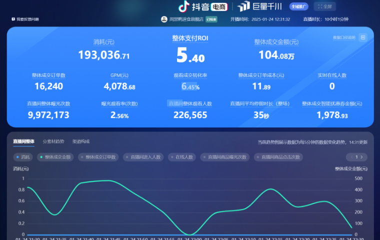
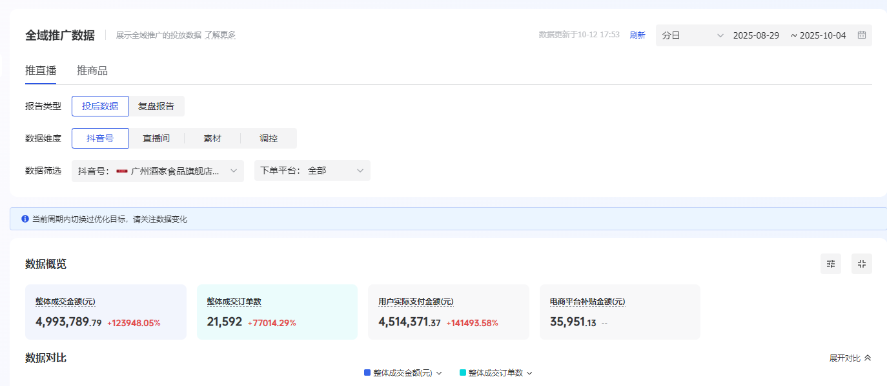
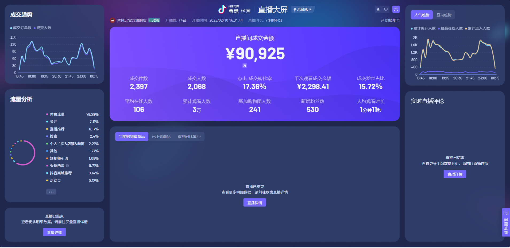

食品案例
周黑鸭：短视频打爆 + 直播间引流
围绕年货节核心策略，以三阶段全链路运营和爆款内容精准投放，整体支付 ROI 5+，短视频消耗占比 78.58%。

Business Cases
用真实数据和项目方法论展示投放、内容与直播间增长能力。
Performance Data

食品案例
围绕年货节核心策略，以三阶段全链路运营和爆款内容精准投放，整体支付 ROI 5+，短视频消耗占比 78.58%。

食品案例
抓住中秋节点，以大量 KOC 素材撬动生意转化，联名月饼商品卡 ROI 5+，37 天 GMV 破 500w。

食品案例
通过专业内容与运营提升品牌在抖音平台的知名度与用户好感，直播间在线人数稳定 100+，场均销售额 9w+。
